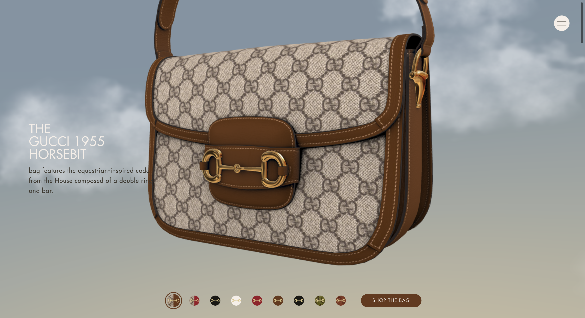
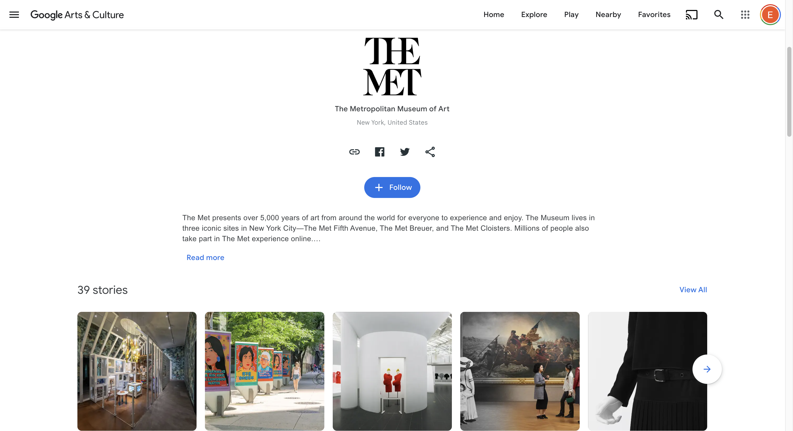

Web as a tool, initially and most usually,is experienced in a 2-dimentional surface. The experience happens either on our laptops or tablets, or on our handheld devices. Although our mode of access to the web affects our experience, it is not the only determinant. How web is composed, in the designing phase, affects the end-user's perception of its level of immersion. In this though piece, I will be explaining strategies and design ideas to develop a third dimension out of an experience that is practically experience more in a two dimensional axis (reason to acknowledge peculiar caes here is because VR headsets are getting more and more popular, hence soon what we call "usual" could change). I will be giving examples of works, and conclude with a deeper understanding of how these strategies affect the interactivity level the user experiences.
First off, where does storytelling and narrative building stand in this equation?
Text has been the most popular media on the web, hands down. However, what I mean by narrative building is far from just textual storytelling. Every choice of color, visual representation and medium of self-expression can be modified by a storytelling lense. Most of the things we see on the net is a product of marketing department. Therefore, most materials are crafts of intention. Most of the things are not happy accidents, which means there is a calculation of what is meant to be understood. Examples that are rich in characterization and visual language will be the ones that will be felt like an experience, and in return the viewer will keep on remembering these contents. This is a skill of content creation. Just like a script writer writes about the scene, and the art director selects the props; a designer that works in the web is the one to imagine a tale not told.
Case Study 1: Drake's Web Page


https://drakerelated.com/rooms/kitchen
Drake's official website's home page is designed like a mansion. The viewer floats between rooms, viewing the highly detailed scene from an isometric point of view. Its as if there was just a party, objects and belongings spread in random places. The user can buy some of the objects through clicking the links on them, which will then take them to a basic ecommerce page. This experience was crafted using prerendered images, so there isn't a real 3D model rendering real time. Which makes the loading time minimal, and the web page running swiftly.
What works really well here is the creation of a non-existing physical space. Drake's style is all over this interior. I also sense the visual aesthatics of GTA games, which adds on to the character that's been created here. There is a clear element of curiosity: what happened in the party? How does Drake party? Is this his house? "Wow such wealth." That "Wow" element is there. Drake is not a typical singer. He, along with a few other rappers (like Travis Scott and Kanye), finds creative collaborators to furter widen his visual branding. There is a clear "world creation" strategy here. Which makes the brand of Drake, and the experience of his website, solid and memorable.
Case Study 2: The Museum of Annoying Experiences & Gucci 1955 Handbag


https://annoyingmuseum.zendesk.com/
https://1955horsebit.gucci.com/#/handbags
Both of these websites use Three.js to implement 3D objects in the webspace, in the form of XR. If one accesses the sites using a VR headset, they are able to experience the content in three dimension. Considering just the 2D way of experiencing it, the success of these web projects are that even though there i snothing 3D while experiencing it, through the use of background and basic modelling, they were able to break the third wall. The user can scroll to view the object 360 degrees, therefore an extra layer of interactivity is then introduced. Different ways of interacting with the site, in terms of controls, is used. Immersion is beyond just the object the user sees.
The strategy here is to work with different mediums and to create ways of plugging these different mediums in the webpage, through the use of appropriate formatting. For the first example, the environment was an exhibition. The second one is an ecommerce product page. Therefore we can understand that as important as the content is, the reason why carries equal amount of importance.
Case Study 3: Google's Arts and Culture

https://artsandculture.google.com/
Google's Arts and Culture site is a perfect example to an appropriate information architecture. In this case, what supports the spatial sense, immersion and interactivity is how the large amount of information is stored and presented. Each museum has its own page, with online exhibitions and collections. Online exhibitions are presented using videos and photos, along with voice recordings and animations to support the swift movement of knowledge. The amount of content in this page is very high, therefore if this webpage was a flop, the user would be lost in a sea of images and text. Meaning is crafted through the creation of pages, like rooms in a house, that are categorized in a highly detailed manner. Exploring art has never been this easy. Which increases the interactivity of the experience, and creates an incentive to keep on exploring different "rooms", museums, and collections.
To conclude, I have looked at examples of works that demonstrate three different startegies to increase the level of immersion in a webpage and make the experience of viewing content from a 2D surface more spatial. The first strategy was to create actual spaces. The second was to incorprate different mediums like three dimensional objects, embedded in functional pages. The third was to craft the information architecture so good, that the webpage turns into its own organism that offers infinite exploration of large amounts of content.